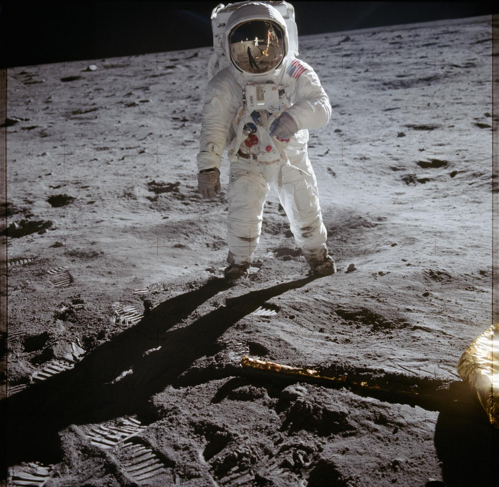

ARCHIVE 001 / NASA / APOLLO PROGRAMME
A first step.
A lasting footprint.
16 — 24 JUL 1969
The journey to Tranquility Base, the people who made it, and the equipment that never came home.

A mission completed. A lunar site still holding its equipment and traces.